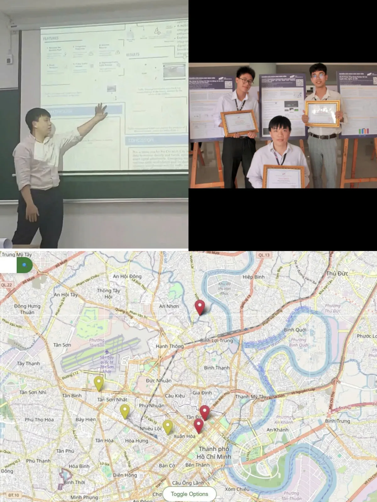

Traffic map screenshot

Smart Traffic Navigation System
Team lead. Reads 20+ public traffic cameras, segments roads and vehicles with a UNet model, turns density into live weights for A* routing, and controls signals with the Webster algorithm. Runs on AWS EC2 with a Flutter app for emergency responders and a FastAPI dashboard for control centers.